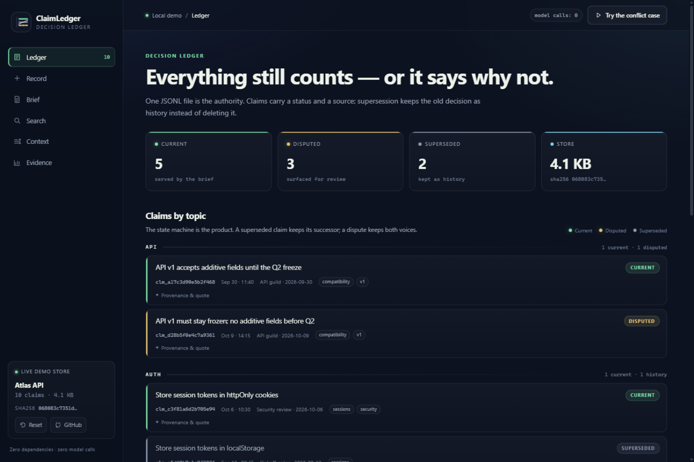
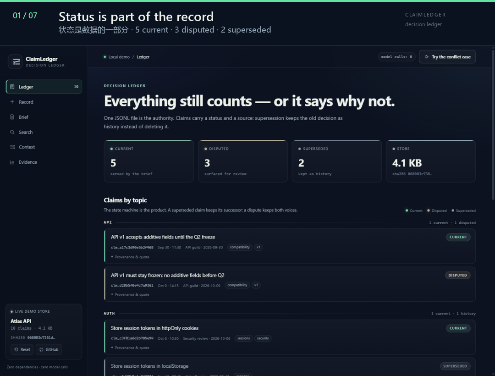

01
Every session starts at zero
Architecture decisions, API constraints, the thing you argued about last week — gone. The agent steps on landmines you already cleared.
LOCAL-FIRST · MCP + AGENT SKILL
ClaimLedger is a local decision ledger for AI agents. Record a decision once; keep its status, source and supersession chain. A conflicting write is refused until a human or the host agent decides.

Real UI from claim demo. Every click writes to a real JSONL store.
01 / THE PROBLEM
An AI coding assistant is a brilliant new hire with daily memory wipes. Three failures keep costing you.
Architecture decisions, API constraints, the thing you argued about last week — gone. The agent steps on landmines you already cleared.
You migrated from SQLite to PostgreSQL. Raw transcripts still return the old decision as if it were current — and the agent reintroduces the problem you fixed.
Both sides of an unresolved timeout debate sit in the transcript. Retrieval returns half of each, the agent picks one, and invents closure.
Hand-maintained memory rots. Vector search is status-blind. The missing piece is a lifecycle for “what still counts”.
02 / THE METHOD
One claim is one standalone statement plus a status and provenance. Around it: two writes, three reads, one state machine.
If a new claim overlaps a current one, the write is refused. Supersede the old claim or declare the dispute. No silent wins.
$ claim record "Use PostgreSQL" --topic database possible conflict with current claim(s): clm_9f2a6c1d4e8b73a0
Deterministic, rebuildable, and honest about omissions: bytes used, budget, and how many entries were dropped.
Lexical retrieval filters superseded claims before ranking. Open disputes surface for review instead of being flattened.
Deterministic code owns structure and integrity. Judgment stays with the agent and the human.
03 / THE DEMO
No hosted sandbox. The same zero-dependency Python engine, a disposable synthetic store, and a browser UI over the real ClaimStore.
No model key, no network, no database. The demo seeds a synthetic Atlas API project into a temp directory and opens at 127.0.0.1:8765.
It never touches your real ledger.
git clone https://github.com/Anhao1314/ClaimLedger.git
cd ClaimLedger
python -m pip install -e .
claim demo
04 / EVIDENCE
24 queries over 40 synthetic sessions. Zero model calls. Stale-hit@5 falls from 54.2% to 0 at a stated Recall@5 cost.
Status filtering drives stale hits to zero, at a stated Recall@5 cost (95.8% → 91.7%). Synthetic development benchmark; retrieval only.
Four topics, twelve curated atomic cards, zero model calls. Structural checks do not prove semantic truth: a false synthesis with a real quote can still pass.
Replay the benchmarks05 / BOUNDARIES
The refusal list is part of the design. Every “no” keeps the next reader from trusting the wrong thing.
The full boundary list lives in the README: no built-in model service, no hosted web UI, no cross-machine sync, no universal compaction hook.
06 / QUICKSTART
Install, record, read. Then connect it to your host over MCP or install the Skill.
The PyPI distribution is claim-ledger; the CLI is claim.
One write at decision time. One deterministic read before work. The ledger is queryable.
Use MCP tools, or install the Skill so the host reads the brief before work and records at decision time.
# capture one decision
claim record "Use PostgreSQL 16 for all storage" --topic database
# a byte-bounded snapshot before work
claim brief --max-bytes 4096
# inspect the whole ledger
claim claims --status allclaude mcp add claim-ledger \
-- claim mcp --store .claim-ledger/claims.jsonl
claim skill install --host claude --scope userOr run the whole thing locally: claim demo